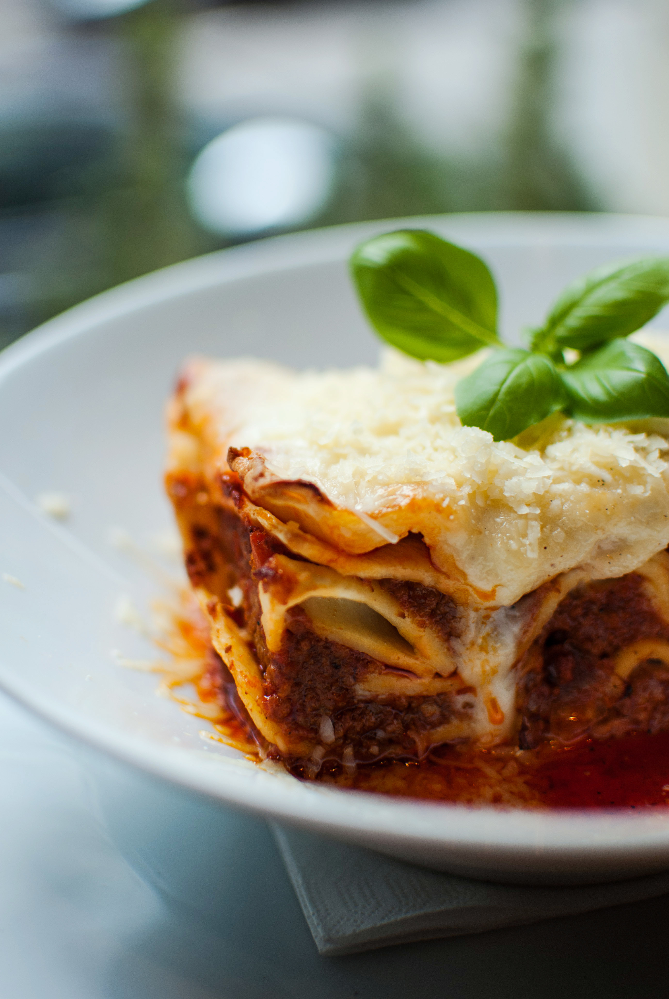

¡Esta receta de lasaña requiere un poco de trabajo, pero es tan satisfactoria y abundante que vale la pena!
La historia de la lasaña se remonta a la antigua Grecia, donde existía un plato llamado "Laganon", que consistía en capas de pasta cortada en tiras y alternadas con carne y salsa. Este concepto de capas se fue perfeccionando a lo largo de los siglos y se adaptó en diversas culturas, especialmente en la cocina romana. Sin embargo, fue en Italia donde la lasaña adquirió su forma moderna, particularmente en la región de Emilia-Romaña.
Durante la Edad Media, la lasaña comenzó a tomar forma como un plato más elaborado. En este periodo, las recetas incluían una mezcla de pasta, carne y quesos. Con el tiempo, la incorporación de ingredientes locales y regionales, como el uso de salsa de tomate tras su llegada a Europa desde América, ayudó a definir lo que hoy conocemos como lasaña. La receta se popularizó en el siglo XIX y se consolidó como un símbolo de la gastronomía italiana.
Hoy en día, la lasaña ha trascendido fronteras y se ha convertido en un plato querido en todo el mundo, con innumerables variaciones que incluyen opciones vegetarianas, de mariscos y versiones sin gluten. Cada región puede tener su propia interpretación, reflejando su cultura y tradiciones culinarias, pero la esencia de la lasaña como un plato reconfortante y sustancioso permanece intactacta
A la comunidad de Allrecipes le encanta esta receta de lasaña porque es increíblemente personalizable, por lo que puedes modificar fácilmente la lista de ingredientes para adaptarla a tus necesidades. Sin embargo, si quieres mantenerte fiel a la receta original, estos son los ingredientes que deberás agregar a tu lista de compras:
Aquí tienes una breve descripción de lo que puedes esperar al preparar lasaña casera:
Las instrucciones detalladas de las capas se pueden encontrar en la receta a continuación, pero este es el orden que deberás seguir:
¿Te preguntas qué va bien con la lasaña? Te lo contamos todo. Consulta nuestra colección de 12 guarniciones fáciles para lasaña para inspirarte en deliciosas preparaciones. Estas son algunas de las recetas que encontrarás: